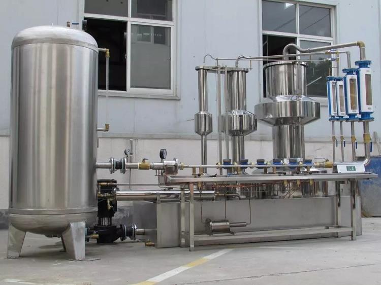

E-mail:
info@sh-meters.comCall Us:
+86 13131984716DN15 10*2; DN20 8*2; DN25 6*2
Calibrate Q3: DN15 5*2; DN20 5*2; DN25 5*2
Calibrate Q4: Calibrate 1 piece in same time
Performance
1). Test quantity:
(1). DN15 10*2; DN20 8*2; DN25 6*2
(2). Calibrate Q3: DN15 5*2; DN20 5*2; DN25 5*2
(3). Calibrate Q4: Calibrate 1 piece in same time
2). Accuracy: ≤0. 2%


Performance
1). Test quantity:
(1). DN15 10*2; DN20 8*2; DN25 6*2
(2). Calibrate Q3: DN15 5*2; DN20 5*2; DN25 5*2
(3). Calibrate Q4: Calibrate 1 piece in same time
2). Accuracy: ≤0. 2%
Component Part
1). LS-3B 15-25Double Series with Compression Tester With 1 set 15-25 Straight Tube
(1). Measuring device is 4 double gourd structures,SS304 material
(2). Rotor flowmeter group, with six flowmeter (3 pieces each set).
(3). Work table and water bucket material is 304 stainless steel plate, the thickness of 1. 5mm. Integral pressing forming
(4). Telescopic clamp meter device made by copper and stainless steel,travel≥60mm, regard water meter calibration device as source
2). 0. 7CBM Source Stability Device. SS304 Material, thickness of 3mm.
3). Stainless Steel Water Tank 2440x1220x400mm SS304 Material, thickness of 1. 5mm.
4). DN100 Filter
5). Piping Pump (support variety of pumps,could choose in your country)
6). Stainless Steel Pipe Fittings include Shockproof Soft Connection,flange and valve (pump to tank to source stability device to water meter tester)
7). Motor: 5. 5KW. 380V, 3 phase, 50Hz.

Size and Weight
1). Size: 4000mm*1950mm*2150mm
2). Weight: 1100KGS
After-sale service
1). Warranty Period: 1 year
2). Install Assistant
3). Extra set of wearing parts
 Volumetric Kent Type Residential Water Meter
Volumetric Kent Type Residential Water Meter Industrial Detachable Woltmann Water Meter with Flange
Industrial Detachable Woltmann Water Meter with Flange Digital Prepaid Water Meter System Installation
Digital Prepaid Water Meter System Installation Class C M-bus Wired Ultrasonic Bulk Water Meter
Class C M-bus Wired Ultrasonic Bulk Water Meter Wired Leakage Test Ultrasonic Water Flow Meter
Wired Leakage Test Ultrasonic Water Flow Meter Water Metering Device
Water Metering Device